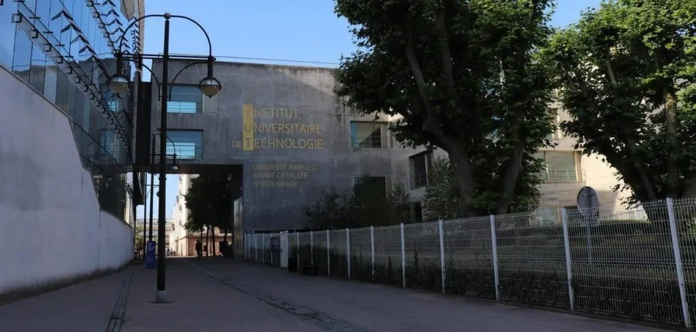

De Troyes à Valenciennes, et retour.
Un bac à Troyes, le design à Meaux, la réalité virtuelle à Valenciennes, et entre deux, des stages et une alternance dans des entreprises de l’Aube. Voici le chemin, étape par étape.

-
2021Troyes48.30° N, 4.08° E
Le déclic
Bac STI2D, option Systèmes d'information et numérique, au lycée Saint-Joseph La Salle. J'y écris mes premiers programmes, avec l'envie de comprendre ce qu'il y a derrière un écran.
-
2021Meaux48.96° N, 2.88° E
Le détour par le design
Je pars trois ans à Meaux pour un BUT MMI : code, UX, vidéo, graphisme. J'y ai appris qu'une interface se teste sur les gens qui l'utilisent, pas sur soi.

-
2022Troyes48.30° N, 4.08° E
Mon premier outil métier
Un stage administratif chez Ophta Médical. En voyant le planning de l'équipe, j'ai construit un tableau qui calcule les heures et les heures supplémentaires de chacun. Je ne savais pas encore que c'était ça, mon métier.
-
2023Saint-André-les-Vergers48.28° N, 4.05° E
Un vrai site, une vraie entreprise
Trois mois chez Réseau Sûr France pour livrer leur nouveau site, avec l'équipe marketing et des demandes qui changent jusqu'au bout.
Voir le projet
-
2023Troyes48.30° N, 4.08° E
Dix mois d'e-commerce
En alternance chez Distri Sûr France, j'ai conçu et développé la boutique en ligne, des maquettes Figma à la mise en ligne sur Odoo.
Voir le projet
-
2024Valenciennes50.36° N, 3.52° E
Cap sur le métavers
Master Sciences et Technologies du Métavers à l'INSA Hauts-de-France : réalité virtuelle, IA, mobile, blockchain, big data. Et l'équipe e-sport de l'école entre deux rendus.
Voir le projet
-
2026Troyes48.30° N, 4.08° E
BTP-360, seul aux commandes
Sept mois pour remplacer les fichiers Excel de quatre sociétés par une seule application, web et Android, en production sur AWS.
Voir le projet
-
2026Troyes48.30° N, 4.08° E
Et maintenant
De retour à Troyes. SubForge avance, et le labo grossit à chaque nouveau dépôt GitHub.
Voir le projet
Ils ont travaillé avec moi
« Ziyad a su mettre en avant ses compétences et son savoir-faire tout au long de son stage. Il s’est adapté très rapidement à l’entreprise, à sa charte graphique ainsi qu’à son fonctionnement. »
« Il nous a apporté des idées pour compléter notre planning du personnel, en créant un tableau qui permet de calculer les heures de travail journalières et de visualiser les heures supplémentaires de chaque employé. »
Assez parlé de moi. Voilà ce qui en est sorti.
Voir les projets